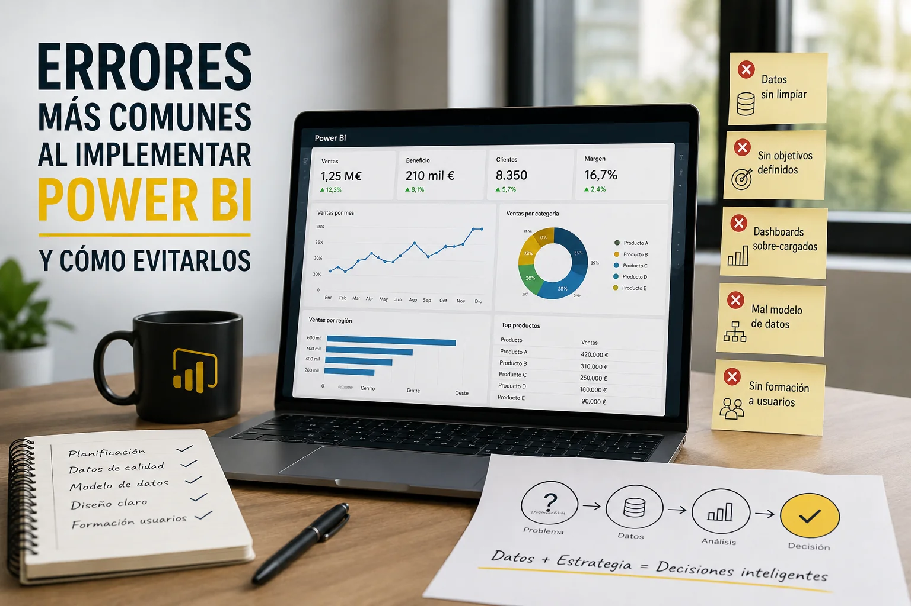

Implementar Power BI puede transformar completamente la manera en la que una empresa analiza sus datos y toma decisiones. Sin embargo, muchas organizaciones no obtienen los resultados esperados porque cometen errores durante la implementación.
En muchos casos el problema no es la herramienta, sino la estrategia, la calidad de los datos o la forma en la que se construyen los dashboards.
En este artículo vamos a ver los errores más comunes al implementar Power BI y cómo evitarlos para conseguir dashboards realmente útiles y profesionales.
Uno de los errores más frecuentes es utilizar Power BI como si fuera simplemente un Excel más visual.
Muchas empresas crean dashboards llenos de tablas enormes, cientos de métricas y demasiada información en una sola pantalla. El resultado suele ser un informe difícil de utilizar y poco útil para la toma de decisiones.
Power BI está pensado para visualizar información de forma clara y ayudar a detectar tendencias rápidamente.
Un buen dashboard no intenta mostrar todo, sino mostrar lo importante.
Power BI puede crear dashboards espectaculares, pero si los datos son incorrectos, el resultado también lo será.
Muchas empresas conectan directamente archivos Excel manuales, datos duplicados o bases de datos sin limpiar.
Esto genera problemas como:
Antes de construir dashboards es fundamental trabajar la calidad del dato.
Muchas veces el verdadero valor de un proyecto BI no está en el dashboard, sino en organizar correctamente la información.
Otro error muy habitual es empezar a crear dashboards sin tener claro qué problema se quiere resolver.
Esto provoca informes llenos de gráficos bonitos pero sin impacto real en el negocio.
Antes de construir cualquier dashboard es importante responder preguntas como:
Un dashboard debe construirse alrededor de objetivos de negocio y no únicamente alrededor de los datos disponibles.
Las mejores implementaciones de Power BI suelen empezar con reuniones funcionales y definición de KPIs antes de empezar el desarrollo técnico.
En ocasiones se intenta incluir demasiadas visualizaciones, filtros y funcionalidades avanzadas.
Esto puede generar:
Muchas veces menos es más.
Los mejores dashboards suelen ser los más fáciles de entender.
Cuando los datos empiezan a crecer, algunos dashboards pueden volverse lentos y difíciles de utilizar.
Esto suele ocurrir por:
El rendimiento es clave para que los usuarios adopten realmente la herramienta.
Muchas implementaciones fallan porque los usuarios no entienden cómo utilizar los dashboards.
Incluso el mejor informe pierde valor si nadie sabe interpretarlo correctamente.
Power BI no es únicamente tecnología, también implica adopción y cultura del dato.
Power BI puede aportar muchísimo valor a una empresa, pero una implementación correcta requiere algo más que crear gráficos.
La calidad del dato, la experiencia de usuario, el rendimiento y la estrategia de negocio son factores fundamentales para que un proyecto BI tenga éxito.
Evitar estos errores desde el principio puede ahorrar tiempo, dinero y frustraciones, además de conseguir dashboards mucho más útiles para la toma de decisiones.
Puedo ayudarte a crear dashboards profesionales, optimizar modelos de datos y automatizar procesos de reporting.